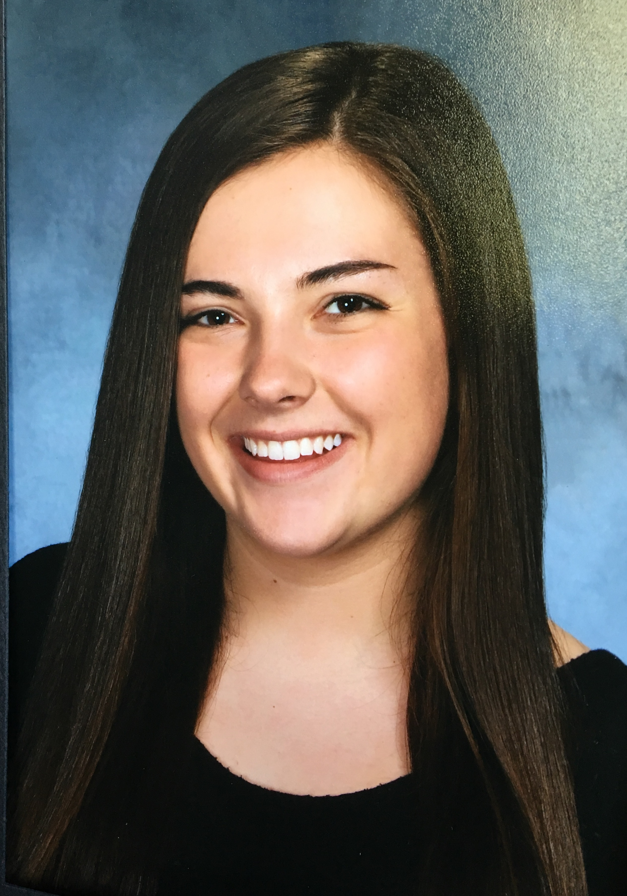

Matalin Marano
About Me
My name is Matlain Marano, however many call me Mattie. I am originally
from Chester, New Jersey, but I am currently living in Coral Gables,
Florida where I am a student at the University of Miami. I am currently
studying to get a BBA in Marketing and Minors in Public Relations and
Interactive Media. After graduation, I hope to get a job in either a Marketing or Public
Relations agency where I can work on social media campaigns for clients. My dream job,
which would combine many of my interests into one, would be to work for the Olympic Committee.
Contact Information
Phone Number: (908)947-8489
Email: mwm89@miami.edu
Address
965 Old Chester Rd.
Far Hills, NJ 07931
Work Experience
- Marketing Intern for NYC Basketball and Playbook
- Drafted emails send to target markets to promote different deals, promotions, and events
being offered by NYC Basketball
- Designed and created promotional materials for Playbook, using inDesign and Photoshop.
These materials included flyers, gifs, and folders.
- Worked on lead generation for list creation. This involved researching
different sports organizations across the country and finding the ones that would
best benefit from the product. Throughout the process I was able to help contribute to
creating a database of possible leads.
- Intern at Scandic Builders
- Created a new organization system for all the existing files, invoices, and billing statments.
- Designed promotional brochures for a new product the company is patenting. The design
had to appeal to potential customers, as well as serve the purpose of educating the
Patent Committee.
- Office Assistant at the Business Law Department at the University of Miami
- Work alongside Business Law faculty to maintain operations in the department and
prepare materials for different classes
- Aid the office manager in drafting correspondence and reviewing course materials for the
whole department
- Interact with students and faculty on a daily basis that that visit the office, while also
managing different tasks and activities that arise
- Director of Marketing for the Chi Omega Fraternity at the University of Miami
- Manage all the social media accounts for the Upsilon Delta chapter of Chi Omega at the
University of Miami to connect with the different target publics.
- Create and cultivate different images and promotional materials for the chapter for
fundraisers and other events, including merchandise and videos.
- Coordinate events and initiatives with other members of the executive board and board of
directors, such as fundraisers and trunk shows.
- Shift Leader at Playa Bowls
- Balanced different tasks throughout the shift, jumping in wherever colleagues needed
assistance, including register and communicating with customers.
- Managed the inventory, ensuring that there were sufficient amounts of all goods to fulfill
demands everyday.
Hobbies and Interests
- Photography
- Graphic Design
- Traveling
- Social Media
- Sports
